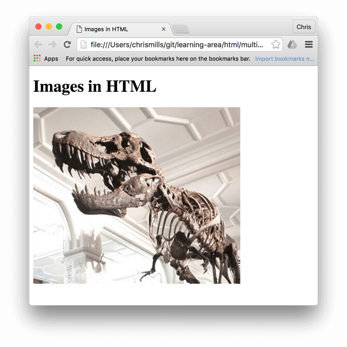
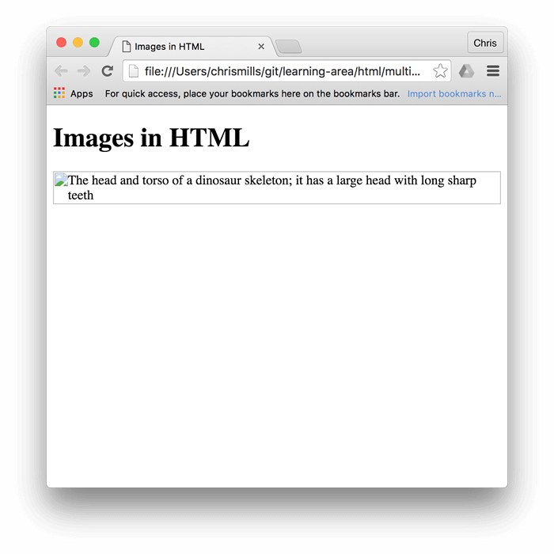
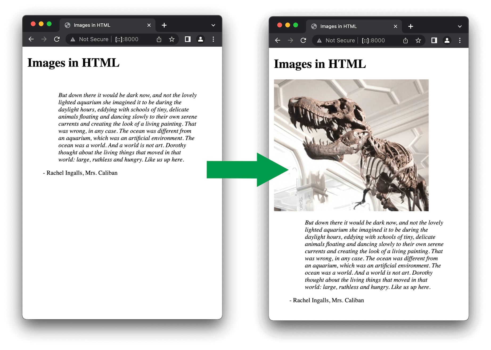
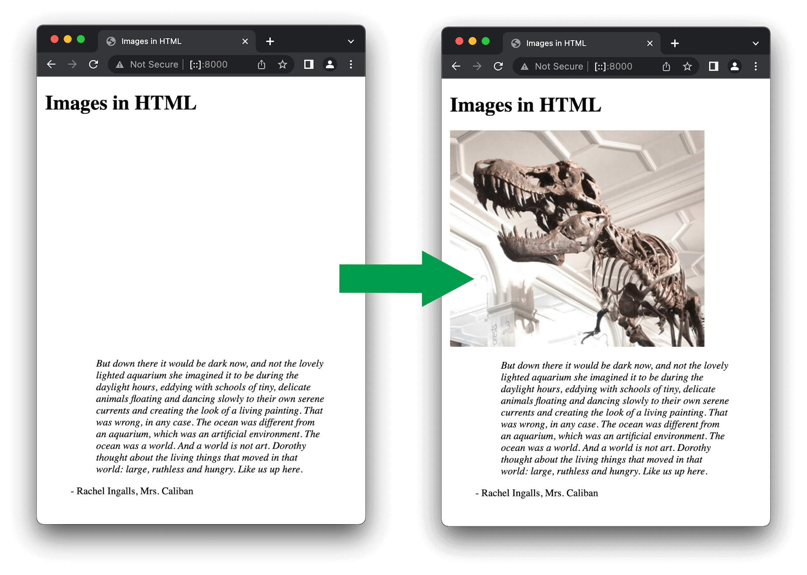

HTML images
In the beginning, the web was just text, and it was really quite boring. Fortunately, it wasn't too long before the ability to embed images (and other more interesting types of content) inside web pages was added. In this article we'll look at how to use the <img> element in depth, including the basics, annotating it with captions using <figure>, and detailing how it relates to CSS background images.
| Prerequisites: | Basic HTML familiarity, as covered in Basic HTML Syntax. Text-level semantics such as headings and paragraphs and lists. |
|---|---|
| Learning outcomes: |
|
How do we put an image on a webpage?
In order to put an image on a web page, we use the <img> element. This is a void element (meaning, it cannot have any child content and cannot have an end tag) that requires two attributes to be useful: src and alt. The src attribute contains a URL pointing to the image you want to embed in the page. As with the href attribute for <a> elements, the src attribute can be a relative URL or an absolute URL. Without a src attribute, an img element has no image to load.
The alt attribute is described below.
Note: You should read A quick primer on URLs and paths to refresh your memory on relative and absolute URLs before continuing.
So for example, if your image is called dinosaur.jpg, and it sits in the same directory as your HTML page, you could embed the image like so:
<img src="dinosaur.jpg" alt="Dinosaur" />
If the image was in an images subdirectory, which was inside the same directory as the HTML page, then you'd embed it like this:
<img src="images/dinosaur.jpg" alt="Dinosaur" />
And so on.
Note:
Search engines also read image filenames and count them towards SEO. Therefore, you should give your image a descriptive filename; dinosaur.jpg is better than img835.png.
You could also embed the image using its absolute URL, for example:
<img src="https://www.example.com/images/dinosaur.jpg" alt="Dinosaur" />
Linking via absolute URLs is not recommended, however. You should host the images you want to use on your site, which in simple setups means keeping the images for your website on the same server as your HTML. In addition, it is more efficient to use relative URLs than absolute URLs in terms of maintenance (when you move your site to a different domain, you won't need to update all your URLs to include the new domain). In more advanced setups, you might use a CDN (Content Delivery Network) to deliver your images.
If you did not create the images, you should make sure you have the permission to use them under the conditions of the license they are published under (see Media assets and licensing below for more information).
Warning:
Never point the src attribute at an image hosted on someone else's website without permission. This is called "hotlinking". It is considered unethical, since someone else would be paying the bandwidth costs for delivering the image when someone visits your page. It also leaves you with no control over the image being removed or replaced with something embarrassing.
The previous code snippet, either with the absolute or the relative URL, will give us the following result:

Note:
Elements like <img> and <video> are sometimes referred to as replaced elements. This is because the element's content and size are defined by an external resource (like an image or video file), not by the contents of the element itself. You can read more about them at replaced elements.
Note: You can find the finished example from this section running on GitHub (see the source code too.)
Alternative text
The next attribute we'll look at is alt. Its value is supposed to be a textual description of the image, for use in situations where the image cannot be seen/displayed or takes a long time to render because of a slow internet connection. For example, our above code could be modified like so:
<img
src="images/dinosaur.jpg"
alt="The head and torso of a dinosaur skeleton;
it has a large head with long sharp teeth" />
The easiest way to test your alt text is to purposely misspell your filename. If for example our image name was spelled dinosooooor.jpg, the browser wouldn't display the image, and would display the alt text instead:

So, why would you ever see or need alt text? It can come in handy for a number of reasons:
- The user is visually impaired, and is using a screen reader to read the web out to them. In fact, having alt text available to describe images is useful to most users.
- As described above, the spelling of the file or path name might be wrong.
- The browser doesn't support the image type. Some people still use text-only browsers, such as Lynx, which displays the alt text of images.
- You may want to provide text for search engines to utilize; for example, search engines can match alt text with search queries.
- Users have turned off images to reduce data transfer volume and distractions. This is especially common on mobile phones, and in countries where bandwidth is limited or expensive.
What exactly should you write inside your alt attribute? It depends on why the image is there in the first place. In other words, what you lose if your image doesn't show up:
- Decoration. You should use CSS background images for decorative images, but if you must use HTML, add a blank
alt="". If the image isn't part of the content, a screen reader shouldn't waste time reading it. - Content. If your image provides significant information, provide the same information in a brief
alttext – or even better, in the main text which everybody can see. Don't write redundantalttext. How annoying would it be for a sighted user if all paragraphs were written twice in the main content? If the image is described adequately by the main text body, you can just usealt="". - Link. If you put an image inside
<a>tags, to turn an image into a link, you still must provide accessible link text. In such cases you may, either, write it inside the same<a>element, or inside the image'saltattribute – whichever works best in your case. - Text. You should not put your text into images. If your main heading needs a drop shadow, for example, use CSS for that rather than putting the text into an image. However, if you really can't avoid doing this, you should supply the text inside the
altattribute.
Essentially, the key is to deliver a usable experience, even when the images can't be seen. This ensures all users are not missing any of the content. Try turning off images in your browser and see how things look. You'll soon realize how helpful alt text is if the image cannot be seen.
Note:
See our guide to Text Alternatives and An alt Decision Tree to learn how to use an alt attribute for images in various situations.
Note: HTML tags MDN learning partner from Scrimba is an interactive lesson providing information on images, and mini-challenges.
Width and height
You can use the width and height attributes to specify the width and height of your image. They are given as integers without a unit, and represent the image's width and height in pixels.
You can find your image's width and height in a number of ways. For example, on the Mac you can use Cmd + I to get the display information for the image file. Returning to our example, we could do this:
<img
src="images/dinosaur.jpg"
alt="The head and torso of a dinosaur skeleton;
it has a large head with long sharp teeth"
width="400"
height="341" />
There's a very good reason to do this. The HTML for your page and the image are separate resources, fetched by the browser as separate HTTP(S) requests. As soon as the browser has received the HTML, it will start to display it to the user. If the images haven't yet been received (and this will often be the case, as image file sizes are often much larger than HTML files), then the browser will render only the HTML, and will update the page with the image as soon as it is received.
For example, suppose we have some text after the image:
<h1>Images in HTML</h1>
<img
src="dinosaur.jpg"
alt="The head and torso of a dinosaur skeleton; it has a large head with long sharp teeth"
title="A T-Rex on display in the Manchester University Museum" />
<blockquote>
<p>
But down there it would be dark now, and not the lovely lighted aquarium she
imagined it to be during the daylight hours, eddying with schools of tiny,
delicate animals floating and dancing slowly to their own serene currents
and creating the look of a living painting. That was wrong, in any case. The
ocean was different from an aquarium, which was an artificial environment.
The ocean was a world. And a world is not art. Dorothy thought about the
living things that moved in that world: large, ruthless and hungry. Like us
up here.
</p>
<footer>- Rachel Ingalls, <cite>Mrs. Caliban</cite></footer>
</blockquote>
As soon as the browser downloads the HTML, the browser will start to display the page.
Once the image is loaded, the browser adds the image to the page. Because the image takes up space, the browser has to move the text down the page, to fit the image above it:

Moving the text like this is extremely distracting to users, especially if they have already started to read it, and it also causes the browser to re-render the page, which is bad for performance.
If you specify the actual size of the image in your HTML using the width and height attributes, then the browser knows how much space to allow for the image, before it has downloaded.
This means that when the image has been downloaded, the browser doesn't have to move the surrounding content.

For an excellent article on the history of this feature, see Setting height and width on images is important again.
Note that if there's no content below the image, re-rendering isn't a problem because resizing the image won't cause other elements to shift. In that case, you can set the image's width only. If you set a width but don't set a height, the height defaults to auto which means it is set to a value that maintains the image's aspect ratio.
Resizing images
Although, as we have said, it is good practice to specify the actual size of your images using HTML attributes, you should not use them to resize images.
If you set the image size too big, you'll end up with images that look grainy, fuzzy, or too small, and wasting bandwidth downloading an image that is not fitting the user's needs. The image may also end up looking distorted, if you don't maintain the correct aspect ratio. You should use an image editor to put your image at the correct size before putting it on your webpage.
If you do need to alter an image's size, you should use CSS instead.
Image titles
As with links, you can also add title attributes to images, to provide further supporting information if needed. In our example, we could do this:
<img
src="images/dinosaur.jpg"
alt="The head and torso of a dinosaur skeleton;
it has a large head with long sharp teeth"
width="400"
height="341"
title="A T-Rex on display in the Manchester University Museum" />
This gives us a tooltip on mouse hover, just like link titles:
However, this is not recommended — title has a number of accessibility problems, mainly based around the fact that screen reader support is very unpredictable and most browsers won't show it unless you are hovering with a mouse (so e.g., no access to keyboard users). If you are interested in more information about this, read The Trials and Tribulations of the Title Attribute by Scott O'Hara.
It is better to include such supporting information in the main article text, rather than attached to the image.
Image embedding practice
It is now your turn to play! This task will get you to embed an image.
-
Click "Play" in the code block below to edit the example in the MDN Playground.
-
Edit the existing
<img>tag so that it embeds the image located at the following URL:urlhttps://raw.githubusercontent.com/mdn/learning-area/master/html/multimedia-and-embedding/images-in-html/dinosaur_small.jpgNote: Earlier we said to never hotlink to images on other servers without permission, but this image is on our GitHub repo, so it is OK.
-
Add an
altattribute to the image. You can check that the alt text works by temporarily misspelling the image URL. -
Set the image's correct
widthandheight(hint: it is200pxwide and171pxhigh), then experiment with other values to see what the effect is. -
Set a
titleon the image.
If you make a mistake, you can clear your work using the Reset button in the MDN Playground. If you get really stuck, you can view the solution below the code block.
<img />
Click here to show the solution
Your finished HTML should look something like this:
<img
src="https://raw.githubusercontent.com/mdn/learning-area/master/html/multimedia-and-embedding/images-in-html/dinosaur_small.jpg"
alt="The head and torso of a dinosaur skeleton; it has a large head with long sharp teeth"
width="200"
height="171"
title="A T-Rex on display in the Manchester University Museum" />
Media assets and licensing
Images (and other media asset types) you find on the web are released under various license types. Before you use an image on a site you are building, ensure you own it, have permission to use it, or comply with the owner's licensing conditions.
Understanding license types
Let's look at some common categories of licenses you are likely to find on the web.
All rights reserved
Creators of original work such as songs, books, or software often release their work under closed copyright protection. This means that, by default, they (or their publisher) have exclusive rights to use (for example, display or distribute) their work. If you want to use copyrighted images with an all rights reserved license, you need to do one of the following:
- Obtain explicit, written permission from the copyright holder.
- Pay a license fee to use them. This can be a one-time fee for unlimited use ("royalty-free"), or it might be "rights-managed", in which case you might have to pay specific fees per use by time slot, geographic region, industry or media type, etc.
- Limit your uses to those that would be considered fair use or fair dealing in your jurisdiction.
Authors are not required to include a copyright notice or license terms with their work. Copyright exists automatically in an original work of authorship once it is created in a tangible medium. So if you find an image online and there are no copyright notices or license terms, the safest course is to assume it is protected by copyright with all rights reserved.
Permissive
If the image is released under a permissive license, such as MIT, BSD, or a suitable Creative Commons (CC) license, you do not need to pay a license fee or seek permission to use it. Still, there are various licensing conditions you will have to fulfill, which vary by license.
For example, you might have to:
- Provide a link to the original source of the image and credit its creator.
- Indicate whether any changes were made to it.
- Share any derivative works created using the image under the same license as the original.
- Not share any derivative works at all.
- Not use the image in any commercial work.
- Include a copy of the license along with any release that uses the image.
You should consult the applicable license for the specific terms you will need to follow.
Note: You may come across the term "copyleft" in the context of permissive licenses. Copyleft licenses (such as the GNU General Public License (GPL) or "Share Alike" Creative Commons licenses) stipulate that derivative works need to be released under the same license as the original.
Copyleft licenses are prominent in the software world. The basic idea is that a new project built with the code of a copyleft-licensed project (this is known as a "fork" of the original software) will also need to be licensed under the same copyleft license. This ensures that the source code of the new project will also be made available for others to study and modify. Note that, in general, licenses that were drafted for software, such as the GPL, are not considered to be good licenses for non-software works as they were not drafted with non-software works in mind.
Explore the links provided earlier in this section to read about the different license types and the kinds of conditions they specify.
Public domain/CC0
Work released into the public domain is sometimes referred to as "no rights reserved" — no copyright applies to it, and it can be used without permission and without having to fulfill any licensing conditions. Work can end up in the public domain by various means such as expiration of copyright, or specific waiving of rights.
One of the most effective ways to place work in the public domain is to license it under CC0, a specific creative commons license that provides a clear and unambiguous legal tool for this purpose.
When using public domain images, obtain proof that the image is in the public domain and keep the proof for your records. For example, take a screenshot of the original source with the licensing status clearly displayed, and consider adding a page to your website with a list of the images acquired along with their license requirements.
Searching for permissively-licensed images
You can find permissive-licensed images for your projects using an image search engine or directly from image repositories.
Search for images using a description of the image you are seeking along with relevant licensing terms. For example, when searching for "yellow dinosaur" add "public domain images", "public domain image library", "open licensed images", or similar terms to the search query.
Some search engines have tools to help you find images with permissive licenses. For example, when using Google, go to the "Images" tab to search for images, then click "Tools". There is a "Usage Rights" dropdown in the resulting toolbar where you can choose to search specifically for images under creative commons licenses.
Image repository sites, such as Flickr, ShutterStock, and Pixabay, have search options to allow you to search just for permissively-licensed images. Some sites exclusively distribute permissively-licensed images and icons, such as Picryl and The Noun Project.
Complying with the license the image has been released under is a matter of finding the license details, reading the license or instruction page provided by the source, and then following those instructions. Reputable image repositories make their license conditions clear and easy to find.
Annotating images with figures and figure captions
Speaking of captions, there are a number of ways that you could add a caption to go with your image. For example, there would be nothing to stop you from doing this:
<div class="figure">
<img
src="images/dinosaur.jpg"
alt="The head and torso of a dinosaur skeleton;
it has a large head with long sharp teeth"
width="400"
height="341" />
<p>A T-Rex on display in the Manchester University Museum.</p>
</div>
This is OK. It contains the content you need, and is nicely stylable using CSS. But there is a problem here: there is nothing that semantically links the image to its caption, which can cause problems for screen readers. For example, when you have 50 images and captions, which caption goes with which image?
A better solution, is to use the HTML <figure> and <figcaption> elements. These are created for exactly this purpose: to provide a semantic container for figures, and to clearly link the figure to the caption. Our above example could be rewritten like this:
<figure>
<img
src="images/dinosaur.jpg"
alt="The head and torso of a dinosaur skeleton;
it has a large head with long sharp teeth"
width="400"
height="341" />
<figcaption>
A T-Rex on display in the Manchester University Museum.
</figcaption>
</figure>
The <figcaption> element tells browsers, and assistive technology that the caption describes the other content of the <figure> element.
Note:
From an accessibility viewpoint, captions and alt text have distinct roles. Captions benefit even people who can see the image, whereas alt text provides the same functionality as an absent image. Therefore, captions and alt text shouldn't just say the same thing, because they both appear when the image is gone. Try turning images off in your browser and see how it looks.
A figure doesn't have to be an image. It is an independent unit of content that:
- Expresses your meaning in a compact, easy-to-grasp way.
- Could go in several places in the page's linear flow.
- Provides essential information supporting the main text.
A figure could be several images, a code snippet, audio, video, equations, a table, or something else.
Creating a figure
In this task, we'd like you to take the finished code from the previous task as a starting point, and turn it into a figure:
- Click "Play" in the code block below to edit the example in the MDN Playground.
- Wrap the
<img>element in a<figure>element. - Copy the text out of the
titleattribute, put it inside a<figcaption>element below the<img>element, then remove thetitleattribute.
If you make a mistake, you can clear your work using the Reset button in the MDN Playground. If you get really stuck, you can view the solution below the code block.
<img
src="https://raw.githubusercontent.com/mdn/learning-area/master/html/multimedia-and-embedding/images-in-html/dinosaur_small.jpg"
alt="The head and torso of a dinosaur skeleton; it has a large head with long sharp teeth"
width="200"
height="171"
title="A T-Rex on display in the Manchester University Museum" />
Click here to show the solution
Your finished HTML should look like this:
<figure>
<img
src="https://raw.githubusercontent.com/mdn/learning-area/master/html/multimedia-and-embedding/images-in-html/dinosaur_small.jpg"
alt="The head and torso of a dinosaur skeleton; it has a large head with long sharp teeth"
width="200"
height="171" />
<figcaption>
A T-Rex on display in the Manchester University Museum
</figcaption>
</figure>
CSS background images
You can also use CSS to embed images into webpages (and JavaScript, but that's another story entirely). The CSS background-image property, and the other background-* properties, are used to control background image placement. For example, to place a background image on every paragraph on a page, you could do this:
p {
background-image: url("images/dinosaur.jpg");
}
The resulting embedded image is arguably easier to position and control than HTML images. So why bother with HTML images? As hinted above, CSS background images are for decoration only. If you just want to add something pretty to your page to enhance the visuals, this is fine. However, such images have no semantic meaning at all. They can't have any text equivalents, are invisible to screen readers, and so on. This is where HTML images shine!
Summing up: if an image has meaning, in terms of your content, you should use an HTML image. If an image is purely decoration, you should use CSS background images (we'll cover these in detail later in the Core modules).
Summary
That's all for now. We have covered images and captions in detail.
In the next article, we'll give you some tests that you can use to check how well you've understood and retained the information we've provided on HTML images.